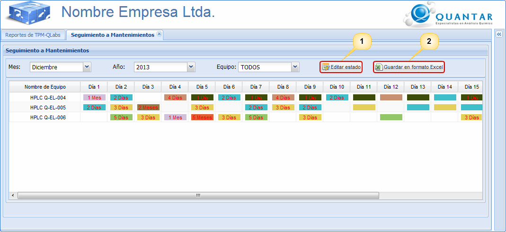

MANUAL DE USUARIO TPM-QLabs -
SEGUIMIENTO A MANTENIMIENTOS
Reporte
de Seguimiento a Mantenimientos
El reporte de seguimiento a mantenimientos es un reporte el cual
permite acceder a información de los mantenimientos que se deben
realizar por equipo teniendo en cuenta un mes y un año específico,
tal y como se muestra en la Figura 1. La información que se
muestra en el reporte de seguimiento a mantenimientos se genera a
partir de los datos ingresados en Periodo Mantenimiento de cada
equipo. Además, es posible exportar a excel la información que
se muestra en formato web una vez sea pulsado el botón Guardar
en formato Excel.

Figura 1. Pantalla reporte seguimiento a
mantenimientos.